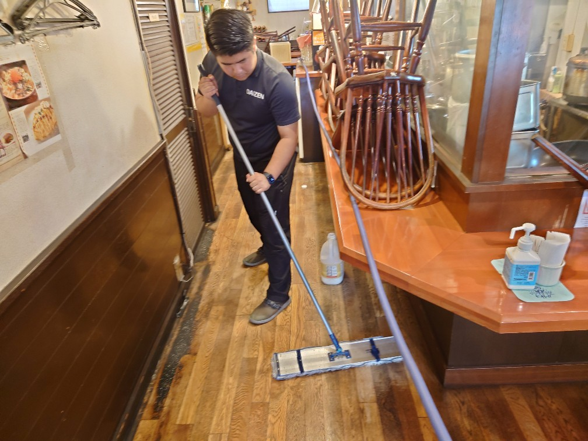
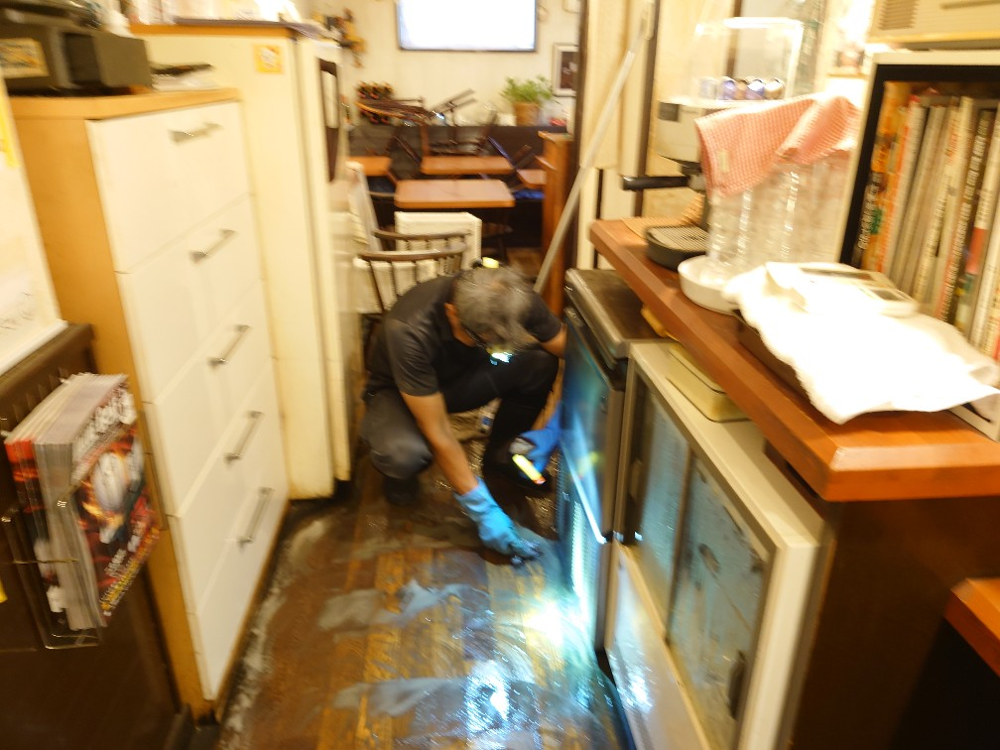
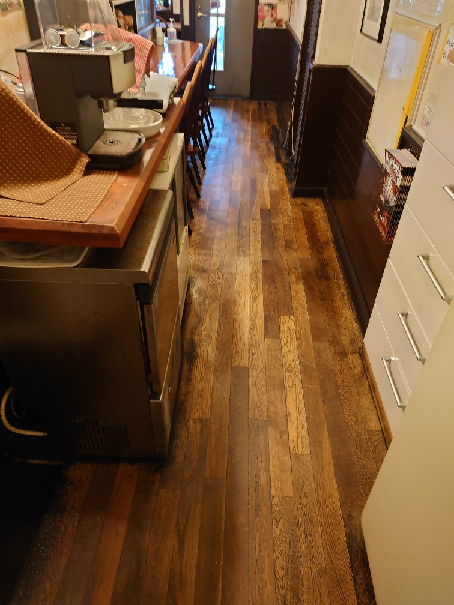
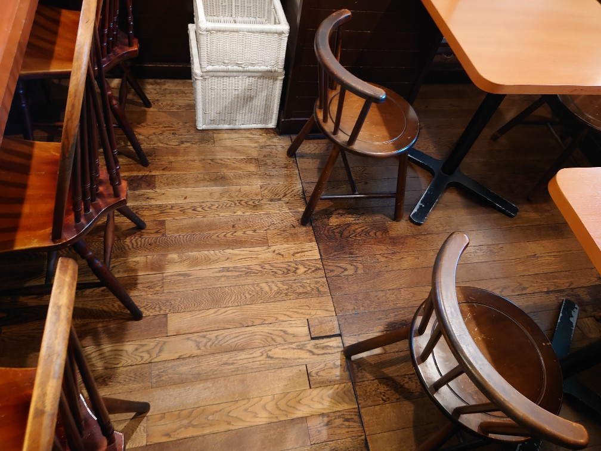
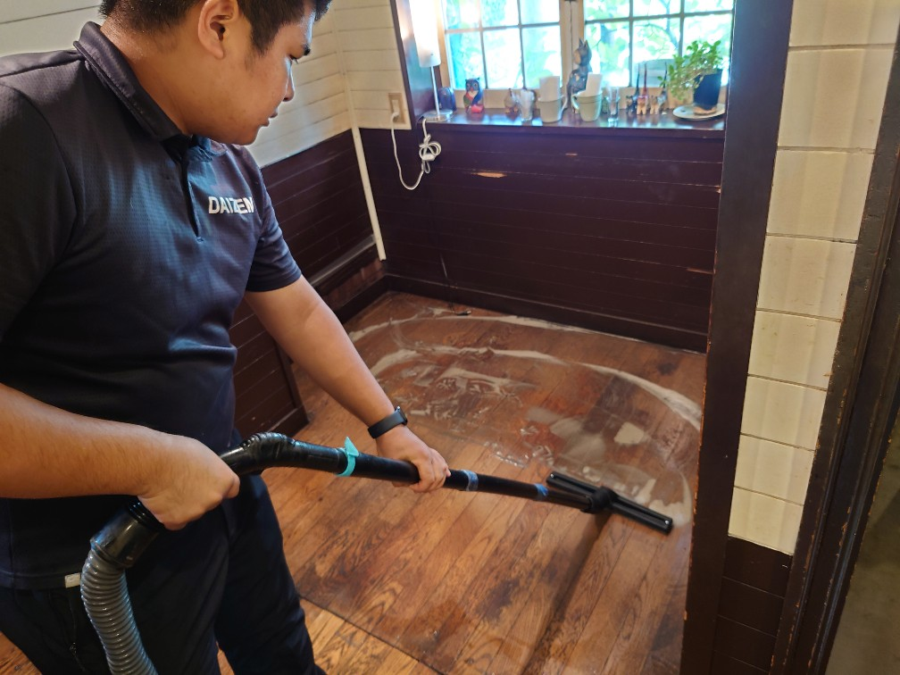
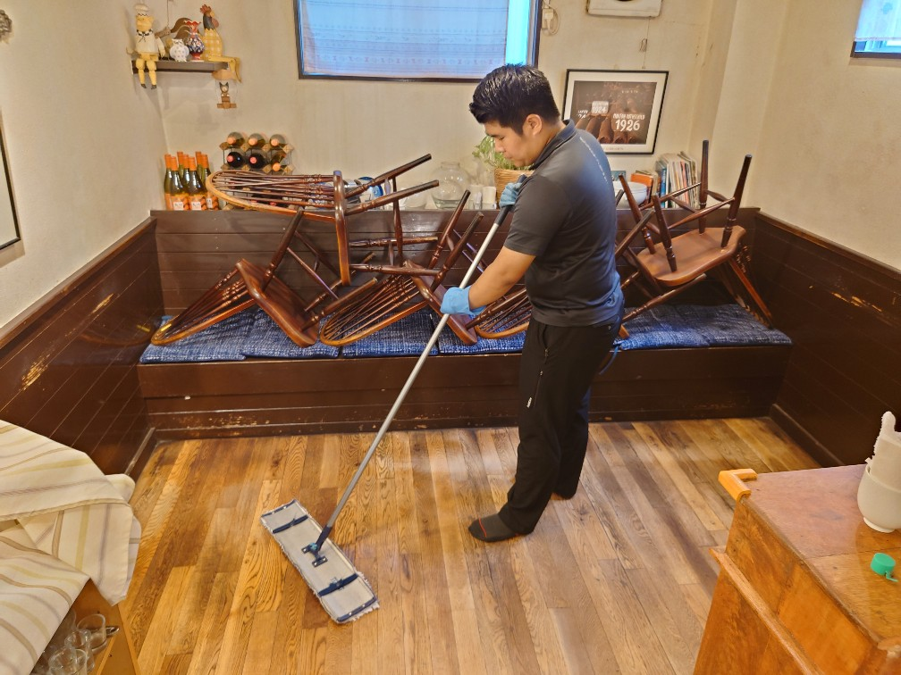
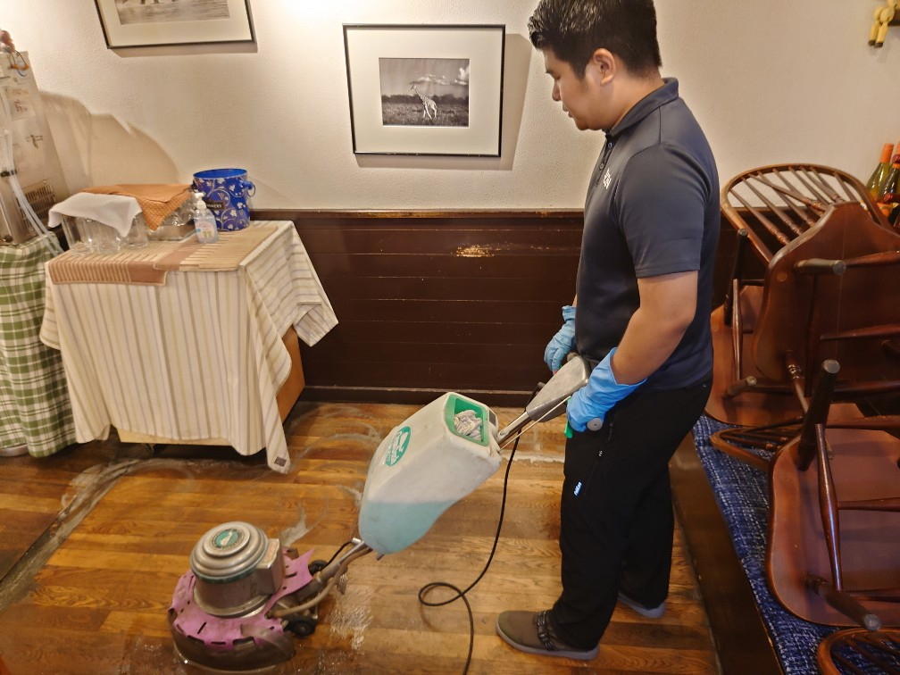
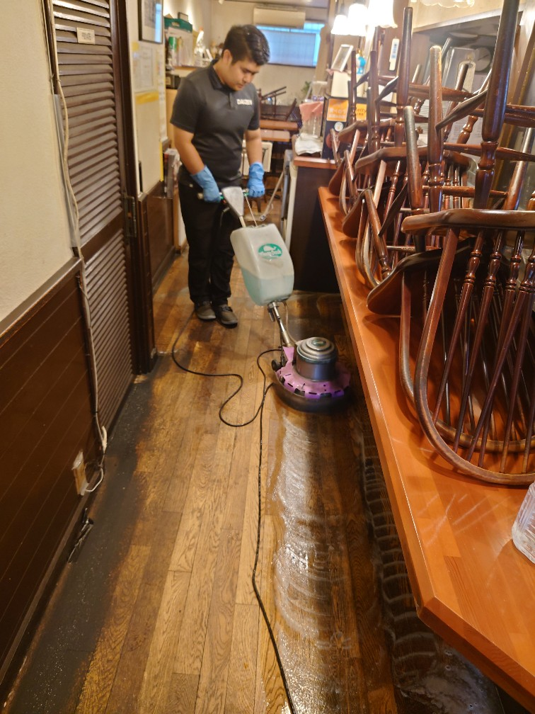
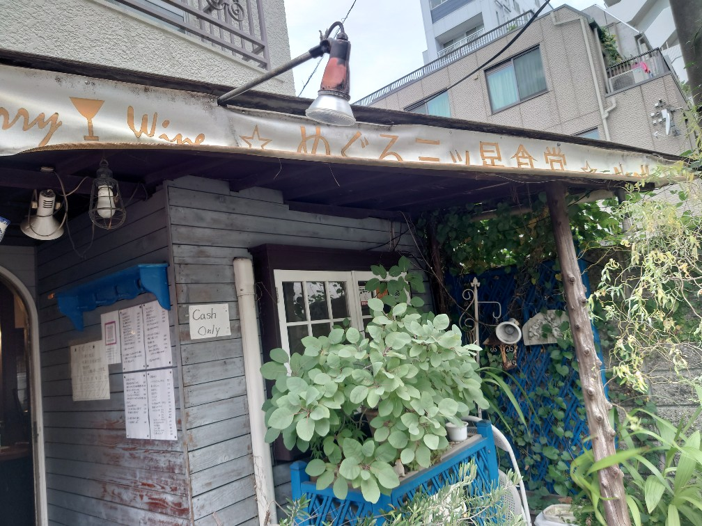

目黒M食堂さん 行列の出来るオムライスの有名なレストランの床面ポリッシャー洗浄ワックス仕上げをしました!

行列の出来る大変美味しいオムライスで有名な、目黒M食堂さんの床面ポリッシャー洗浄ワックス仕上げをしました!レストランの床面は油汚れ、堆積汚れが有りますので、専用薬剤を用いてDAIZENメソッドで木の床面を丁寧に何往復もしながら専用機器でクリーニングして行きます。床面の油汚れ、堆積汚れが除去され、真っ黒い汚水が大量に取れます。その後乾かしてワックス仕上げをするとピカピカの美しい木の床面が現れます。これでまた人気店の床面が綺麗になりました!







